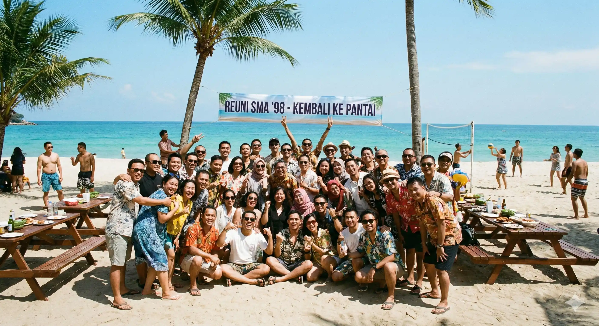

Mengumpulkan kembali kawan-kawan lama yang sudah bertahun-tahun terpisah oleh kesibukan masing-masing adalah niat mulia yang sering berujung pada kelelahan panitia. Menyepakati tanggal saja susahnya minta ampun, apalagi mengurus detail konsumsi dan susunan acara di hari H. Dengan menggunakan jasa EO gathering reuni sekolah di Malang yang berpengalaman seperti Gemilang Katun Outbound, semua kerumitan itu bisa Anda percayakan ke tangan profesional, sehingga panitia inti pun bisa ikut bernostalgia dengan tenang.
Artikel ini membahas secara mendalam mengapa Malang & Batu adalah destinasi ideal untuk reuni, apa saja layanan yang bisa Anda dapatkan dari vendor outbound Batu Malang terpercaya, bagaimana rundown acara yang berkesan dibentuk, serta tips-tips praktis dalam memilih EO yang tepat.
Mengapa Malang Jadi Pilihan Ideal untuk Reuni?
Malang bukan sekadar kota dingin dengan pemandangan indah. Kota ini menyimpan nilai nostalgia tersendiri bagi alumni sekolah yang pernah menghabiskan tahun-tahun formatif di sini. Kawasan Batu yang hanya 30 menit dari pusat kota menghadirkan pilihan lokasi outdoor yang luar biasa: ladang bunga, hutan pinus, kebun apel, hingga kawah-kawah vulkanik yang memukau.
Kami merekomendasikan beberapa lokasi favorit:
- Taman Rekreasi Selecta — ikonik, cocok untuk semua usia, parkir luas
- Kebun Apel Poncokusumo — pengalaman petik apel langsung, udara sejuk
- Area Songgoriti, Batu — mata air hangat alami, nuansa pedesaan tenang
- Sengkaling Recreation Park — kolam renang, wahana, dan area outbound terintegrasi

Suasana gathering reuni yang hangat bersama Gemilang Katun Outbound di kawasan Malang & Batu.
"Reuni bukan sekadar berkumpul. Ia adalah jembatan antara siapa kita dulu dan siapa kita sekarang — dirajut kembali oleh tawa, cerita, dan momen yang tak bisa dibeli."
Layanan Lengkap EO Gathering Reuni dari Gemilang Katun
Gemilang Katun Outbound hadir sebagai solusi vendor outbound Batu Malang terpercaya yang menangani event reuni secara menyeluruh:
Perencanaan & Desain Acara
Tim kami mulai dengan konsultasi gratis untuk memahami jumlah peserta, anggaran, dan ekspektasi Anda. Kami rancang konsep dari tema unik hingga dekorasi venue yang mencerminkan identitas angkatan.
Fasilitator & MC Profesional
MC kami berpengalaman memimpin acara 50–500+ peserta, pandai mencairkan suasana, dan terlatih menangani situasi tak terduga. Fasilitator games kreatif & energetik tersedia untuk sesi ice breaking.
Logistik & Konsumsi
Katering prasmanan dengan menu khas Jawa Timuran tersedia dalam berbagai paket. Tim kami koordinasi langsung dengan vendor lokal terpercaya. Tersedia snack break dan welcome drink.
Dokumentasi Profesional
Setiap momen berharga diabadikan oleh tim fotografer & videografer profesional. Hasil editing foto tersedia dalam 3–5 hari kerja.
Transportasi & Akomodasi
Untuk peserta dari luar kota, kami bantu koordinasi shuttle bus. Kami juga punya rekanan hotel & villa di kawasan Batu dengan rate group khusus.
Contoh Rundown Acara Reuni yang Berkesan
- 07.00 – 08.00 — Registrasi & Welcome Drink
- 08.00 – 08.30 — Opening Ceremony & Sambutan Ketua Panitia
- 08.30 – 10.00 — Ice Breaking & Games Sesi 1 (Nostalgia Edition)
- 10.00 – 12.00 — Waktu Bebas: Tour Lokasi & Photo Session
- 12.00 – 13.30 — Makan Siang Prasmanan + Hiburan Musik Akustik
- 13.30 – 15.00 — Games Sesi 2 & Door Prize
- 15.00 – 16.00 — Photo Session Angkatan & Pembagian Souvenir
- 16.00 – 16.30 — Closing Ceremony & Doa Penutup
Tips Memilih EO Reuni yang Terpercaya di Malang
1. Cek Portofolio & Track Record
Tanyakan referensi klien dan mintalah dokumentasi acara yang pernah mereka tangani. Gemilang Katun Outbound telah menangani ratusan event sejak 2012.
2. Pastikan Ada Jalur Komunikasi yang Jelas
EO profesional memiliki satu PIC yang bisa dihubungi kapan saja. Hindari EO yang lambat merespons atau tidak memiliki kontrak tertulis.
3. Bandingkan Harga dengan Kualitas
Perhatikan apa saja yang termasuk dalam paket. Gemilang Katun Outbound menawarkan paket all-in yang transparan tanpa biaya tersembunyi.
Baca Juga
→ Paket Outbound Anak Yatim di Batu Malang yang Bermakna → Lokasi Fun Offroad Ramah Anak di Batu Malang → Outbound Spiritual Building Training di MalangFAQ — Pertanyaan Seputar EO Gathering Reuni Sekolah di Malang
Biaya paket sangat bervariasi tergantung jumlah peserta, lokasi, dan layanan yang dipilih. Untuk 50–100 peserta, estimasi mulai dari Rp 3.500.000 (paket basic) hingga Rp 15.000.000+ (paket premium all-in). Hubungi kami di 0822-1122-1909 untuk penawaran yang disesuaikan.
Gemilang Katun Outbound melayani kegiatan mulai dari 30 peserta hingga lebih dari 500 peserta. Kami menyesuaikan skala layanan dengan jumlah peserta tanpa mengorbankan kualitas.
Beberapa lokasi favorit: Taman Rekreasi Selecta, Kebun Apel Poncokusumo, Sengkaling, Songgoriti, dan area hutan pinus Cangar. Pilihan tergantung jumlah peserta, anggaran, dan jenis aktivitas yang diinginkan.
Kesimpulan
Reuni sekolah adalah momen langka yang sayang untuk disia-siakan. Dengan bantuan EO gathering reuni sekolah di Malang yang berpengalaman, Anda bisa fokus menikmati kebersamaan tanpa pusing mengurus logistik. Gemilang Katun Outbound hadir sebagai vendor outbound Batu Malang terpercaya yang telah melayani ratusan event dengan dedikasi penuh sejak 2012. Hubungi kami sekarang!